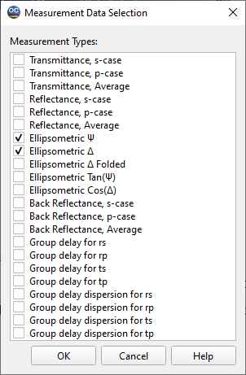

Measurement Selection
Generally, you select a type of measurement data using its abbreviations. This dialog allows you to directly specify which measurement data is used in the characterization or reverse engineering procedure.

Check required measurement types and apply changes by pressing OK. The Cancel button will discard all changes.
Note: The angle of incidence is always specified in the Incident Medium. For back reflectance and similar characteristics, this means that the angle of the Back reflectance should be computed using Snell’s Law if the Exit Medium is different from the Incident one.